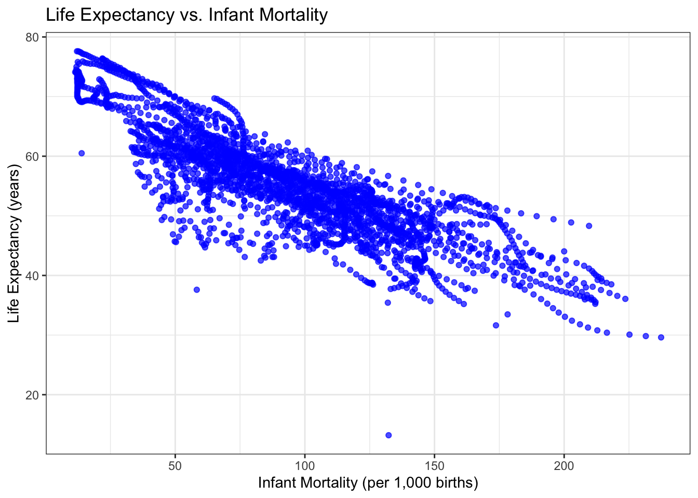
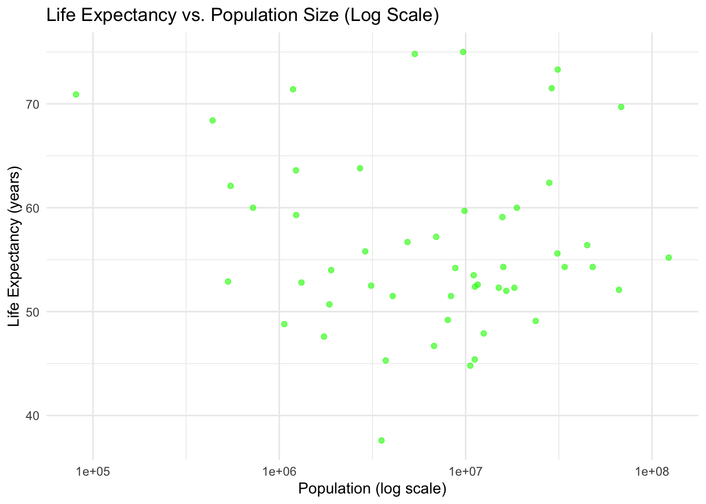

#Placeholder file for the future R coding exercise.
#we are installing these packages and loading the different libraries that are #required for the different sets of code to run in R.
#install.packages("dslabs")#install.packages("naniar")#loads the dslabs packagelibrary(dslabs)
Warning: package 'dslabs' was built under R version 4.4.2
library(tidyverse)
Warning: package 'tidyverse' was built under R version 4.4.2
Warning: package 'purrr' was built under R version 4.4.3
Warning: package 'stringr' was built under R version 4.4.2
── Attaching core tidyverse packages ──────────────────────── tidyverse 2.0.0 ──
✔ dplyr 1.1.4 ✔ readr 2.1.5
✔ forcats 1.0.0 ✔ stringr 1.5.1
✔ ggplot2 3.5.1 ✔ tibble 3.2.1
✔ lubridate 1.9.3 ✔ tidyr 1.3.1
✔ purrr 1.0.4
── Conflicts ────────────────────────────────────────── tidyverse_conflicts() ──
✖ dplyr::filter() masks stats::filter()
✖ dplyr::lag() masks stats::lag()
ℹ Use the conflicted package (<http://conflicted.r-lib.org/>) to force all conflicts to become errors
library(dplyr)library(naniar)
\(\textbf{This section contributed to by ANNALISE CRAMER, after Doreen's analysis}\)
#look at help file for gapminder datahelp("gapminder")
starting httpd help server ... done
data("gapminder") #we are loading the data to make it ready for use.str(gapminder)
'data.frame': 10545 obs. of 9 variables:
$ country : Factor w/ 185 levels "Albania","Algeria",..: 1 2 3 4 5 6 7 8 9 10 ...
$ year : int 1960 1960 1960 1960 1960 1960 1960 1960 1960 1960 ...
$ infant_mortality: num 115.4 148.2 208 NA 59.9 ...
$ life_expectancy : num 62.9 47.5 36 63 65.4 ...
$ fertility : num 6.19 7.65 7.32 4.43 3.11 4.55 4.82 3.45 2.7 5.57 ...
$ population : num 1636054 11124892 5270844 54681 20619075 ...
$ gdp : num NA 1.38e+10 NA NA 1.08e+11 ...
$ continent : Factor w/ 5 levels "Africa","Americas",..: 4 1 1 2 2 3 2 5 4 3 ...
$ region : Factor w/ 22 levels "Australia and New Zealand",..: 19 11 10 2 15 21 2 1 22 21 ...
#this function is helping us know the number of rows(observations) and number of #variables in the data set. There are 10545 rows and 9 columns.summary(gapminder)
country year infant_mortality life_expectancy
Albania : 57 Min. :1960 Min. : 1.50 Min. :13.20
Algeria : 57 1st Qu.:1974 1st Qu.: 16.00 1st Qu.:57.50
Angola : 57 Median :1988 Median : 41.50 Median :67.54
Antigua and Barbuda: 57 Mean :1988 Mean : 55.31 Mean :64.81
Argentina : 57 3rd Qu.:2002 3rd Qu.: 85.10 3rd Qu.:73.00
Armenia : 57 Max. :2016 Max. :276.90 Max. :83.90
(Other) :10203 NA's :1453
fertility population gdp continent
Min. :0.840 Min. :3.124e+04 Min. :4.040e+07 Africa :2907
1st Qu.:2.200 1st Qu.:1.333e+06 1st Qu.:1.846e+09 Americas:2052
Median :3.750 Median :5.009e+06 Median :7.794e+09 Asia :2679
Mean :4.084 Mean :2.701e+07 Mean :1.480e+11 Europe :2223
3rd Qu.:6.000 3rd Qu.:1.523e+07 3rd Qu.:5.540e+10 Oceania : 684
Max. :9.220 Max. :1.376e+09 Max. :1.174e+13
NA's :187 NA's :185 NA's :2972
region
Western Asia :1026
Eastern Africa : 912
Western Africa : 912
Caribbean : 741
South America : 684
Southern Europe: 684
(Other) :5586
#the summary function helps us know the summary statistic of each variable in the#data set.class(gapminder)
[1] "data.frame"
# Use the class() function to check the type of the gapminder object. its class #is a data frame.
code that assigns afrian countries.
africadata<-gapminder%>%filter(continent=="Africa")#africadata#this code gets filter for countries that only belong to the African continent.
Data for life expectancy and infant mortality.
exp_mortal_data<- africadata%>%select(infant_mortality,life_expectancy)#exp_mortal_data#this code gets into the African data and selects only the two colums we need.
Data for life expectancy and population.
popn_expct_data<- africadata%>%select(population,life_expectancy)#this code gets into the African data and selects only the two colums we need.
#get an overview of the data structure for life expectancy and infant mortality.str(exp_mortal_data)
'data.frame': 2907 obs. of 2 variables:
$ infant_mortality: num 148 208 187 116 161 ...
$ life_expectancy : num 47.5 36 38.3 50.3 35.2 ...
#summary of the data structure.summary(exp_mortal_data)
infant_mortality life_expectancy
Min. : 11.40 Min. :13.20
1st Qu.: 62.20 1st Qu.:48.23
Median : 93.40 Median :53.98
Mean : 95.12 Mean :54.38
3rd Qu.:124.70 3rd Qu.:60.10
Max. :237.40 Max. :77.60
NA's :226
#get an overview of the data structure for population and life expectancy.str(popn_expct_data)
'data.frame': 2907 obs. of 2 variables:
$ population : num 11124892 5270844 2431620 524029 4829291 ...
$ life_expectancy: num 47.5 36 38.3 50.3 35.2 ...
#summary of the data structure.summary(popn_expct_data)
population life_expectancy
Min. : 41538 Min. :13.20
1st Qu.: 1605232 1st Qu.:48.23
Median : 5570982 Median :53.98
Mean : 12235961 Mean :54.38
3rd Qu.: 13888152 3rd Qu.:60.10
Max. :182201962 Max. :77.60
NA's :51
Plot life expectancy as a function of infant mortality.
Warning: Removed 226 rows containing missing values or values outside the scale range
(`geom_point()`).

Second plot of life expectacy vs population size.
ggplot(data = popn_expct_data, aes(x = population, y = life_expectancy)) +geom_point(color ="red", alpha =0.6) +scale_x_log10() +# Set x-axis to a logarithmic scalelabs(title ="Life Expectancy vs. Population Size (Log Scale)",x ="Population (log scale)",y ="Life Expectancy (years)" ) +theme_minimal() #
Warning: Removed 51 rows containing missing values or values outside the scale range
(`geom_point()`).
From the second plot, we notice that there are streaks in the data because countries with similar population sizes often share similar demographic characteristics or reporting practices.We notice that most countries with populations clustered around the same thresholds(e.g 5million, 10 million, 50 million…) display similar life expectancy values, creating visual streaks.
lets figure out some missing data.
sum(is.na(africadata$infant_mortality))
[1] 226
#these are the missing values for infant mortality in the africadata set.
The code above only filters for rows in the data sets where the year is 2000 and leaves out everything else.
str(valid_data)
'data.frame': 51 obs. of 9 variables:
$ country : Factor w/ 185 levels "Albania","Algeria",..: 2 3 18 22 26 27 29 31 32 33 ...
$ year : int 2000 2000 2000 2000 2000 2000 2000 2000 2000 2000 ...
$ infant_mortality: num 33.9 128.3 89.3 52.4 96.2 ...
$ life_expectancy : num 73.3 52.3 57.2 47.6 52.6 46.7 54.3 68.4 45.3 51.5 ...
$ fertility : num 2.51 6.84 5.98 3.41 6.59 7.06 5.62 3.7 5.45 7.35 ...
$ population : num 31183658 15058638 6949366 1736579 11607944 ...
$ gdp : num 5.48e+10 9.13e+09 2.25e+09 5.63e+09 2.61e+09 ...
$ continent : Factor w/ 5 levels "Africa","Americas",..: 1 1 1 1 1 1 1 1 1 1 ...
$ region : Factor w/ 22 levels "Australia and New Zealand",..: 11 10 20 17 20 5 10 20 10 10 ...
summary(valid_data)
country year infant_mortality life_expectancy
Algeria : 1 Min. :2000 Min. : 12.30 Min. :37.60
Angola : 1 1st Qu.:2000 1st Qu.: 60.80 1st Qu.:51.75
Benin : 1 Median :2000 Median : 80.30 Median :54.30
Botswana : 1 Mean :2000 Mean : 78.93 Mean :56.36
Burkina Faso: 1 3rd Qu.:2000 3rd Qu.:103.30 3rd Qu.:60.00
Burundi : 1 Max. :2000 Max. :143.30 Max. :75.00
(Other) :45
fertility population gdp continent
Min. :1.990 Min. : 81154 Min. :2.019e+08 Africa :51
1st Qu.:4.150 1st Qu.: 2304687 1st Qu.:1.274e+09 Americas: 0
Median :5.550 Median : 8799165 Median :3.238e+09 Asia : 0
Mean :5.156 Mean : 15659800 Mean :1.155e+10 Europe : 0
3rd Qu.:5.960 3rd Qu.: 17391242 3rd Qu.:8.654e+09 Oceania : 0
Max. :7.730 Max. :122876723 Max. :1.329e+11
region
Eastern Africa :16
Western Africa :16
Middle Africa : 8
Northern Africa : 6
Southern Africa : 5
Australia and New Zealand: 0
(Other) : 0
Lets make these plots again but this time around with the data that contains the year 2000.
From the above plot, we see that there is a negative correlation between life expectancy aand infant mortality.
Lets take a look at a Second plot. This contains data for the year 2000 but still we are considering life expentancy and population size.
ggplot(data = valid_data, aes(x = population, y = life_expectancy)) +geom_point(color ="green", alpha =0.6) +scale_x_log10() +# Set x-axis to a logarithmic scalelabs(title ="Life Expectancy vs. Population Size (Log Scale)",x ="Population (log scale)",y ="Life Expectancy (years)" ) +theme_minimal() #

From the above, we dont see any correlation between the two variables.
lets apply some linear regression to the data and see what comes out.
fit1<-lm(valid_data$life_expectancy ~valid_data$infant_mortality)#applying linear regression model to the two variables.fit2<-lm(valid_data$life_expectancy~valid_data$population)summary(fit1)
Call:
lm(formula = valid_data$life_expectancy ~ valid_data$infant_mortality)
Residuals:
Min 1Q Median 3Q Max
-22.6651 -3.7087 0.9914 4.0408 8.6817
Coefficients:
Estimate Std. Error t value Pr(>|t|)
(Intercept) 71.29331 2.42611 29.386 < 2e-16 ***
valid_data$infant_mortality -0.18916 0.02869 -6.594 2.83e-08 ***
---
Signif. codes: 0 '***' 0.001 '**' 0.01 '*' 0.05 '.' 0.1 ' ' 1
Residual standard error: 6.221 on 49 degrees of freedom
Multiple R-squared: 0.4701, Adjusted R-squared: 0.4593
F-statistic: 43.48 on 1 and 49 DF, p-value: 2.826e-08
summary(fit2)
Call:
lm(formula = valid_data$life_expectancy ~ valid_data$population)
Residuals:
Min 1Q Median 3Q Max
-18.429 -4.602 -2.568 3.800 18.802
Coefficients:
Estimate Std. Error t value Pr(>|t|)
(Intercept) 5.593e+01 1.468e+00 38.097 <2e-16 ***
valid_data$population 2.756e-08 5.459e-08 0.505 0.616
---
Signif. codes: 0 '***' 0.001 '**' 0.01 '*' 0.05 '.' 0.1 ' ' 1
Residual standard error: 8.524 on 49 degrees of freedom
Multiple R-squared: 0.005176, Adjusted R-squared: -0.01513
F-statistic: 0.2549 on 1 and 49 DF, p-value: 0.6159
From the first fit1 the summary of results shows that there is a negative relationship between life expectancy and infant mortality. for every unit increase in infant mortality, life expectancy decreases by 0.189 years and this is statistically significant with p-value<0.001.
From the summary results of the second fit, it shows that When the population is 0 (hypothetical case), the predicted life expectancy is approximately 55.93 years.
There is a positive relationship between life expectancy and population size. For every unit increase in population size, the life expectancy increase by 0.00000002756 years(This is not meaningful). However, this was not statitically significant with p-values=0.616 >0.05.
This suggests almost no meaningful relationship between between population size and life expectancy in our data.
\(\textbf{The following section is Annalise Cramer's analysis}\)
First, let us load the dataset. There’s several difference infectious diseases, states, years 1928-2011, weeks, and counts of cases.
Okay, looks like polio and mumps are okay, and the pertussis data is weird. Let’s continue forward with polio. I’ll create a new variable, Region, using CDC’s geographic divisions. I used AI to write this, since I didn’t want to type out every state’s name.
region_data <- polio %>%mutate(region =case_when( state %in%c("Connecticut", "Maine", "Massachusetts", "New Hampshire", "Rhode Island", "Vermont") ~"New England", state %in%c("New Jersey", "New York", "Pennsylvania") ~"Middle Atlantic", state %in%c("Illinois", "Indiana", "Michigan", "Ohio", "Wisconsin") ~"East North Central", state %in%c("Iowa", "Kansas", "Minnesota", "Missouri", "Nebraska", "North Dakota", "South Dakota") ~"West North Central", state %in%c("Delaware", "District of Columbia", "Florida", "Georgia", "Maryland", "North Carolina", "South Carolina", "Virginia", "West Virginia") ~"South Atlantic", state %in%c("Alabama", "Kentucky", "Mississippi", "Tennessee") ~"East South Central", state %in%c("Arkansas", "Louisiana", "Oklahoma", "Texas") ~"West South Central", state %in%c("Arizona", "Colorado", "Idaho", "Montana", "Nevada", "New Mexico", "Utah", "Wyoming") ~"Mountain", state %in%c("Alaska", "California", "Hawaii", "Oregon", "Washington") ~"Pacific",TRUE~"Other"# Catch-all for states not listed ) )
Okay, I’ll make the same plot as earlier, but I’ll color by region.
Call:
lm(formula = count ~ region, data = region_data)
Residuals:
Min 1Q Median 3Q Max
-687.3 -198.5 -87.0 14.3 5504.7
Coefficients:
Estimate Std. Error t value Pr(>|t|)
(Intercept) 528.13 35.00 15.088 < 2e-16 ***
regionEast South Central -356.71 52.50 -6.794 1.42e-11 ***
regionMiddle Atlantic 159.22 57.16 2.786 0.00539 **
regionMountain -460.16 44.62 -10.313 < 2e-16 ***
regionNew England -403.78 47.39 -8.520 < 2e-16 ***
regionOther -485.55 85.74 -5.663 1.69e-08 ***
regionPacific -223.38 49.50 -4.513 6.76e-06 ***
regionSouth Atlantic -380.09 44.62 -8.518 < 2e-16 ***
regionWest North Central -297.65 45.83 -6.495 1.04e-10 ***
regionWest South Central -235.01 52.50 -4.476 8.01e-06 ***
---
Signif. codes: 0 '***' 0.001 '**' 0.01 '*' 0.05 '.' 0.1 ' ' 1
Residual standard error: 501.2 on 2081 degrees of freedom
Multiple R-squared: 0.1047, Adjusted R-squared: 0.1008
F-statistic: 27.04 on 9 and 2081 DF, p-value: < 2.2e-16
We will assume null hypotheses that neither set of predictors is associated with case count, and we’ll use an alpha=0.05 significance level. Model 1 shows that some states were significant predictors of pilio case counts, California, Illinois, Massachusetts, Michigan, Minnesota, New York, Ohio, Pensylvania, Texas, and Wisconsin. Model 2 found all regions to be significantly asosociated with polio case counts.